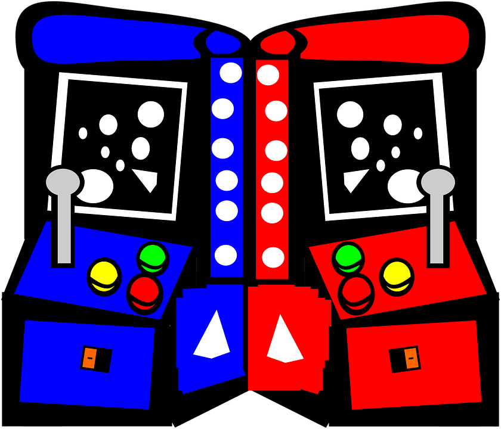

Ciencia de datos en los videojuegos
Germán Martínez Maldonado
Sistemas Inteligentes para la Gestión en la Empresa

Objetivo
- Aprovechar tanto como sea posible la comprensión de la cognición y la emoción humana.
- Una mejor comprensión de los diferentes tipos de jugadores puede ayudar en el diseño de juegos.
- Un modelado preciso de los jugadores puede ser usado para crear mecánicas de juego adaptables en tiempo real.
- Idea base: un modelo de jugador será tan bueno como el modelo teórico que lo soporta y el modelo de aprendizaje que lo procesa.
Problema
- El comportamiento de los jugadores puede ser complejo, variable y dificil de interpretar.
- Varios modelos de psicología de jugadores se han propuesto para facilitar la clasificación con distinto grado de éxito.
Solución
- Un enfoque de aprendizaje automático mediante modelos no teóricos del comportamiento de los jugadores permite obtener resultados razonables.
- Usar enfoques teóricos derivados de la psicología de los tipos de jugador en conjunto de con algoritmos de aprendizaje automático para construir un clasificador en tiempo real con resultados precisos.
Demostración
- Modelado de jugador mediante aprendizaje usando etiquetas de clase a partir de una tipologia de jugador.
- Usar la salida como un clasificador en tiempo real en un juego de prueba: Pac-Man.

Demostración
- Mecánica de juego conocida: depredador-presa.
- Motivación del jugador clara.
- Esquema de control simple.
- Espacio de juego completamente representado.
- Elementos simples que no restan complejidad al juego: diferentes tipos de jugador.
- Movimientos en tiempo real, pero con lógica basada en turnos: árboles de decisión.